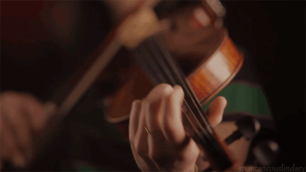

Classical Music
Classical music is art music produced or rooted in the traditions of Western music, including both liturgical (religious)
and secular music. While a more precise term is also used to refer to the period from 1750 to 1820 (the Classical period),
this article is about the broad span of time from before the 6th century AD to the present day, which includes the
Classical period and various other periods.The central norms of this tradition became codified between 1550 and 1900,
which is known as the common-practice period.

Move your mouse over the image to see the result